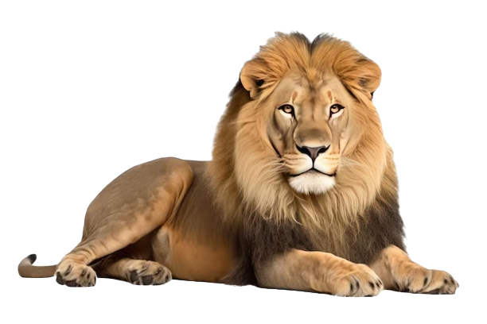

Lion
The lion is a large cat of the genus Panthera native to Africa and India. It has a muscular, broad-chested body; short, rounded head; round ears; and a hairy tuft at the end of its tail. It is sexually dimorphic; adult male lions are larger than females and have a prominent mane
 Speed: 74 km/h (Maximum, In Short Bursts)
Speed: 74 km/h (Maximum, In Short Bursts) Why is a lion special?

Ten Interesting Facts about Lions | Blog Posts | WWF The lion has forever been a symbol of strength, power and ferocity. During WWF tours to Africa, seeing the majestic species up-close is sure to be a spine-tingling experience. 10. African lions are the most social of all big cats and live together in groups or “prides.” A pride consists of about 15 lions.